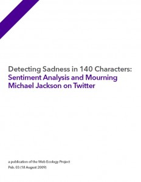

Detecting Sadness in 140 Characters:
Michael Jackson on Twitter
By Elsa Kim and Sam Gilbert
with Michael J. Edwards and Erhardt Graeff
Michael Jackson’s death created an emotional outpouring of unprecedented magnitude on Twitter. In this report, we examine 1,860,427 tweets about Jackson’s death in order to test various methods of sentiment analysis and gain insights into how people express emotion on Twitter.
Key findings
- At its peak, the conversation about Michael Jackson’s death on Twitter proceeded at a rate of 78 tweets per second.
- Users tweeting about Jackson’s death tend to use far more words associated with negative emotions than are found in ‘everyday’ tweets.
- Roughly 3/4 of tweets about Jackson’s death that use the word “sad” actually express sadness, suggesting that sentiment analysis based on word usage is fairly accurate.
- That said, there is extensive disagreement between human coders about the emotional content of tweets, even for emotions that we might expect would be clear (like sadness).
- Tweets expressing personal, emotional sadness about the Jackson’s death showed strong agreement among coders while commentary on the auxiliary social effects of Jackson’s death showed strong disagreement.
- We argue that this pattern in the “understandability” of certain types of communication across Twitter is due to the way the platform structures the expression of its users.
We would like to thank Jonathan Beilin, Evan Burchard, David Fisher, Tim Hwang, Alex Leavitt, Dharmishta Rood, Max van Kleek, Jue Wang, and Seth Woodworth for their invaluable feedback and support.
Detecting Sadness in 140 Characters (pdf), Appendices (pdf)
{kind=link}
1. Introduction
On June 25, 2009, news reports announced the death of Michael Jackson, leading to a flood of reactions on Twitter. From 9pm—10pm EDT alone, there were over 279,000 tweets about Michael Jackson, or roughly 78 tweets per second (See graph above). What can be said about this massive body of tweets? What sorts of emotions did people express about Michael Jackson’s death?
Michael Jackson’s death provided occasion for a large wave of digital mourning—that is, the expression of grief online, usually coordinated via a common method or localized to a particular webpage. The latter type of mourning has become popular practice on social networking sites such as MySpace and Facebook, where the profile of the individual who has died is transformed into a digital memorial onto which friends and family leave last goodbyes and testaments.
After Michael Jackson’s death, common digital mourning practices emerged on a variety of platforms. Testimonials and goodbyes poured into Michael Jackson’s Myspace page, Facebook saw a similar influx of grievers on Jackson’s main fan page and in newly created groups. The outpouring of tweets about Michael Jackson contains many similar expressions of grief, but as of yet there has been no research about digital mourning on Twitter.
The body of tweets about Michael Jackson’s death also offers an opportunity to explore strategies for sentiment analysis—the process of determining the attitude of a speaker or speakers towards a particular topic in a large corpus of text. Because of its 140 character limit on messages and the social mores of the platform, Twitter offers challenges to the natural language processing and statistics-based techniques typically used to analyze sentiment.
This report represents a step towards understanding digital mourning and analyzing sentiment on Twitter. After describing our data, this report presents the results of an analysis of sentiment words in that data and findings from hand-coding tweets about Michael Jackson. This closer look at tweets about Jackson’s death provides insights into digital mourning practices on Twitter, assesses the validity of our first attempt at sentiment analysis by zeroing in on a word important to that analysis, and gauges the feasibility of doing larger scale sentiment studies in the future.
2. Description of the dataset
For this project, we made use of a dataset of 2,331,066 tweets about celebrity deaths (rumored or actual) collected for reasons that go beyond the scope of this report. These tweets were posted to Twitter between June 24 at 12:37am EDT (the day before Jackson’s death) and July 6 at 6:48pm EDT and were collected from Twitter’s search API using the following search terms:
- MJ
- Michael Jackson
- Jackson
- Farrah
- Fawcett
- Jill Munroe
- Micheal (a very common misspelling)
- Goldblum
- Billy Mays
From this dataset of tweets, we worked with the 1,860,427 tweets that contain “mj” or “michael” or “jackson” for this particular report. Because we do not yet have a reliable mechanism for filtering tweets by language, this set contains a small portion of non-english tweets; these tweets are excluded in the analysis that follows.
We also isolated those 44,383 tweets in this set that contained the word “sad.” In addition to analyzing this set of tweets using the ANEW dataset, described below, we randomly selected 346 tweets for human coding.
3. ANEW Analysis
The Affective Norms for English Words (ANEW) dataset contains normative emotional ratings for 1034 English words. Each word in the dataset is associated with a rating of 1–9 along each of three dimensions of emotional affect: valence (pleasure vs. displeasure), arousal (excitement vs. calmness), and dominance (strength vs. weakness) (Bradley & Lang, 1999).
We used this set to conduct sentiment analyses on large sets of tweets by looking at the usage of ANEW words within those tweets. For each analysis, average valence, arousal, and dominance ratings are calculated by determining the frequency of each ANEW word within the set and calculating the average ratings of the ANEW words weighted by this frequency. Similar ANEW analysis has proven useful in other online contexts (Dodds & Danforth, 2009), but has yet to be done with Twitter.
In analyzing the set of 1,860,427 tweets about Michael Jackson’s death, we found 849,603 instances of an ANEW word being used, and these 849,603 ‘hits’ contained the following average ratings:
Valence: 5.713
Arousal: 5.243
Dominance: 5.175
To give these numbers a point of comparison, we ran the same analysis on two different random samples of 1,860,427 ‘everyday’ tweets, pulled from Twitter’s streaming API between June 8 and June 23, 2009.
Sample 1:
675,137 hits
Valence: 6.350
Arousal: 5.256
Dominance: 5.559
Sample 2:
676,846 hits
Valence: 6.351
Arousal: 5.257
Dominance: 5.60
Given the remarkably similar hit counts and ratings observed between the two random baseline sets, we understand the differences between these baseline tweets and the tweets about Michael Jackson to be significant. In particular, the sizable difference in average affective valence ratings between the sets (~.64) suggests that those users tweeting about Michael Jackson are collectively choosing words in their tweets that expressed negative emotions, as would be expected from digital mourners.
The goal of sentiment analysis, however, is not to learn what words people on twitter are using, but to gain insight into how people are feeling. Can we reasonably infer from the low valence score of our set of Michael Jackson tweets that the people who created these tweets are less happy than normal?
4. Human Coding of “Sad” Tweets
To better understand the significance of our ANEW analysis, which applies independent ratings of emotion to the words used in a set of tweets, we decided to zero in on a particular ANEW word—“sad”—to see how it is used.
Within the ANEW dataset, “sad” has a very low valence (1.61), and it appears 53,300 times in our set of Michael Jackson tweets, roughly 16 times more often than it appears in our random samples of tweets. As compared to all Michael Jackson tweets, which had an average valence of 5.713, these “sad” tweets have an average valence of 3.317. Use of the word “sad” appears to be an important reason why the average valence of the Michael Jackson tweets is lower than that of the baseline tweets. By looking at the use of this word, we can better understand what the ANEW analysis method can and cannot tell us about sentiment on twitter.
We hand-coded a set of 346 “sad” tweets to see if usage of that word within our set of tweets aligns with the valence rating ascribed to sad within the ANEW dataset. If people tweeting the word “sad” were indeed expressing sadness, it would suggest that our ANEW analysis is giving us reliable knowledge about the emotional state of the Michael Jackson tweeters.
4.1 Rating Methods
For each of these 346 “sad” tweets, each of our 6 raters determined whether or not the person who had created the tweets was expressing sadness. Raters were told to give each tweet one of four nominal ratings:
- “Y” – yes; the person who created this tweet is expressing sadness
- “N” – no; the person who created this tweet is not expressing sadness
- “M” – mixed; the person who created this tweet expresses sadness as well as another conflicting emotion
- “U” – unclear; the tweet in question is spam, is not in English, or is otherwise impossible to interpret with respect to sentiment.
Beyond giving these directions, we did not do any training of our raters; over the course of coding, we did, however, remind raters several time of the criteria mentioned above (for example several raters needed to be reminded that if you think the tweet is spam, mark “U”).
4.2 Rating Results
Of 346 tweets containing “sad,” raters, while not necessarily agreeing on any given tweet, reported on average that 271.83 (74.68%) tweets expressed sadness, and there were 222 tweets (64.16%) that all 6 raters judged as expressing sadness.
Raters reported on average that 28.33 (7.78%) tweets did not express sadness, 20.67 (5.68%) tweets expressed mixed emotion, and 25.17 (6.91%) tweets were unclear. There were 6 (1.73%) tweets that all raters reported as not expressing sadness, 7 (2.02%) tweets that all reported as unclear, and no tweets that all raters reported as expressing mixed emotions (See graphs for a summary of these results).
As part of the rating process, coders also highlighted certain tweets that they found interesting or difficult to interpret; these tweets are illustrative of the types of disagreements observed across coders. In addition to discussing these tweets below, Appendix A lists some of these tweets, arranged according to decreasing levels of agreement, and Appendix B lists some particularly illustrative tweets sorted by type.
4.3 Measures of Inter-rater Agreement
As the above results suggest, there was far from perfect consensus among raters interpreting tweets. All 6 raters agreed on only 235 (67.92%) tweets, and at least 5/6 raters agreed on 284 (82.08%) tweets.
Given that there was a relatively large group of raters and a number of categories to choose from, this level of consensus might seem acceptable. However, one must take into account the prevalence of “yes” ratings; with such a large majority of tweets falling under one code, one should expect higher levels of consensus (Sim & Wright, 2005).
In order to better measure how reliably our raters interpreted sentiment in tweets, we calculated Fleiss’ Kappa κ, a measure of inter-rater reliability well-suited to our coding procedure (Fleiss, 1971). Like other Kappas, this method accounts for random agreement, essentially comparing the amount of agreement seen among coders (defined as an average of every tweet’s P-value, a measure from 0 to 1 of the variation in each tweet’s ratings) to the agreement one would see in a random distribution of ratings. For this set of ratings, we found a κ of .561; while there are not clear standards for what is considered an acceptable kappa, .7 and above typically suggests strong agreement (Fleiss, 1971).
4.4 The Shifting Contextual Definition of “Sad”
This low level of agreement between coders suggests that even though there are a sizeable number of tweets that clearly express sadness, there is a lot of difficulty in interpreting emotion on Twitter. When we sorted the tweets by their P-value (which range from 1, representing complete agreement, to 0, representing complete disagreement), we found differences between tweets that had varying levels of agreement. From total agreement to near-complete disagreement, tweets varied in type from expressing personal or objective sadness to offering commentary on the auxiliary societal effects of the death, such as the media frenzy. Generally, it was easier for coders to agree on personal declarations of sadness than on instances where “sad” was used to describe a circumstance tangential to the death.
Those tweets with a P-value of 1 generally expressed sadness. These tweets ranged from the calm, equivocal statements of sadness to the hyper-emotional. A calm, sad example was:
“Michael Jackson’s death is a sad loss…thoughts and prays go out to his family.”
Note that this tweet displays both an emotional reaction and objective reportage of the social situation. A hyper-emotional one read:
“Michael Jackson Died!! whatt??? im saddened…deeply sad :(“
There were also tweets that combined emotion and objective reportage on the events of the tweeter’s life, including:
“Feeding the baby and feeling sad about Michael Jackson! He left is too soon!”
and
“Shocked by Michael Jackson’s death. Such a sad, sad day. Going out for a couple of sales calls, late.”
This combination of life status update and emotional update leads to consensus among the coders, perhaps because the accompanying life status update helps clarify that the tweeter is not being sarcastic.
Those tweets with lower P-values more often include different uses of the word “sad”, suggesting that these other types of tweets are more difficult for coders to reliably interpret. At a P-value of .6667, tweets started to include commentary on the death, often of a moral nature, for example:
“sick of hearing about michael jackson now sad yes end of world no and he was no saint people need to remember that”
At a P-value of .46667, tweets began to express frustration at the media frenzy. According to these users, Jackson’s death was certainly something to be acknowledged and even honored, but it was inappropriate and bothersome for the media to focus on it so heavily. For example:
“@AnnCurry I agree – enough of Michael Jackson. Sad, but . . . others have died, too, but now ignored, thanks to MIchael.”
At a P-value of .4, one sees more instances of personal commentary, that is, observations about the self that are tangentially related to Jackson’s death. Examples include:
“Sadd… i love Michael Jackson…!! rest in peace… my mom better buy me a MJ T-shirt……”
“TMZ.com claims that Michael Jackson is dead, but his Wikipedia page has yet to be updated. How sad is it that I went to Wikipedia?”
In this latter instance, it is difficult to tell whether or not the tweeter was sad about the death of Jackson at all.
As the P-value decreased to .2 and .2666 and finally .1333, the tweets included confusing grammar, commentary such as:
“Celebrity triple – Ed McMahon, Farah F and MJ – despite the fame, not one of them died in peace – broke and feuding with family – sad…”
and of course, the appearance of what seemed to be spam:
“RT @bowlsey @JamieC: Very sad about Michael Jackson. HABITAT – for all your furniture needs – habitat.co.uk.”
At the two levels of highest disagreement, humor was introduced as well. For example:
“Michael Jackson, Billy Mays, and now XHTML 2—so very, very sad…”
The tweets with the least agreement do not report specifically on Michael Jackson’s death. They volleyed back and forth between mourning Farrah Fawcett and Jackson:
“Who’da thunk that today would be the day that Michael Jackson died? It feels fake. I’m SO sad about Farrah Fawcett. Such a surreal day…”
or commented on Jackson’s death as a phenomenon that impacted society:
“Saddened and unsurprised watching the prices change on Michael Jackson CDs in second hand shops.”
5. Discussion and Further Research
At the outset of this study, ANEW analysis revealed a significant difference in the valence values between an average day of tweets and those tweets about Michael Jackson’s death. But these values do not necessarily correspond to a user’s expressed emotions or explain the variation and nuance in human sadness. For this, we turned to human coders, asking them to rate tweets containing the word “sad” as sad, not sad, mixed or unsure. Coders’ ratings suggest that approximately 75% of tweets express sadness, giving credence to the ANEW analysis.
These results indicate that the ANEW dataset is a promising tool for sentiment analysis on Twitter. Having proven useful in this pioneering analysis, ANEW should now be applied to a variety of different samples of tweets—a larger set of analyses will give us a better sense of ANEW’s strengths and weaknesses and provide a more robust set of referents for any given valence, arousal, or dominance rating.
Hand-coding the emotion in tweets will always provide a more nuanced picture than analysis with ANEW, however, because ANEW measures the presence of individual words instead of considering a word’s context. Unfortunately, comparing coders’ ratings resulted in a Kappa value of .561, indicating that our hand-coders did not display a high rate of agreement. An important next step, then, is to attempt new rounds of coding with different parameters in hopes of better understanding what is achievable with such coding. If we are able to improve IRA for certain types of analysis, we may be able to perform large-scale human coding projects with tools like Amazon Mechanical Turk. Enough of this coding data could provide the basis for a training corpus with which to automate the process of detecting emotion by its context, instead of simply through individual words as ANEW does.
Developing advanced, pragmatic human or AI coding techniques will facilitate the data-gathering necessary to compare emotional content between platforms, being conscious of the varying constraints of those platforms. After additional studies, we hope to be able to identify which platforms a researcher should first examine in order to gain insight into how particular emotional, social, or psychological phenomena are articulated by different web ecosystems.
Through our hand-coding of tweets, we also developed a typology for tweets that contained the word “sad.” The further a tweet was from describing a personal emotional experience or the objective social experience of Michael Jackson’s death, the more difficult it was for our coders to pinpoint whether there was sadness expressed in the tweet or not.
This more careful analysis of tweets about Michael Jackson’s death paints a complex picture of digital mourning on Twitter. As a loosely organized messaging network, Twitter does not operate as a “memorial” akin to clearly delimited online spaces like Myspace and Facebook; as seen even within tweets that contain the word “sad,” Twitter seems to support a wide spectrum of reactions to Jackson’s death, some of which have little to do with mourning. Given the short-lived nature of data on Twitter (the tweets discussed here are no longer available in Twitter’s search, which only goes back roughly a week), users appear more inclined to report Jackson’s death as a current event and less inclined to memorialize or collectively grieve. Furthermore, Twitter appears to be a far more ‘personal’ medium than other online spaces: tweeters tended to comment on sadness as individuals watching the public reaction instead of commiserating with particular friends or communities.
Appendix A: Sampling of Tweets ordered from most agreement to least
Coders highlighted these tweets as illustrative of the types of disagreements they saw around coding. Tweets are sorted by these types in Appendix B; see for further explanation
1, Complete agreement : tweets generally sad (statement made from observation, not from stats)
Michael Jackson’s death is a sad loss…thoughts and prays go out to his family.
Emotional + Objective news reportage
Wow. sick to my stomach. Rest in peace, Michael Jackson. So sad. he may’ve been accusof a lot, but he also helped a lot
Hyper-Emotional
Michael Jackson Died!! whatt??? im saddened…deeply sad :(
Hyper-Emotional
Sad, sad day. Still can’t believe Michael Jackson died
Emotional (disbelief)
Feeding the baby and feeling sad about Michael Jackson! He left is too soon!
Emotion + Objective self-reportage
Shocked by Michael Jackson’s death. Such a sad, sad day. Going out for a couple of sales calls, late.
Emotion + Objective self-reportage
is going to listen to 114 michael jackson songs …its a sad day
Emotion + Objective self-reportage
.66667, Some agreement: tweets generally offering commentary, often moral
I’m so sad about about Michael Jackson! I can’t even get on eonline, wtf?!
Emotion + Self-reportage
MJ and Farrah??? What is the world coming to??? Such a sad day in Hollywood!!! RIP to some of the greats :-(
Emotion
This is bad, real bad, Michael Jackson. Now I’m sad, real sad, all the jacksons….
Humor
It’s sad we lost Michael Jackson. But how many others die and we never hear of it? http://ow.ly/g10W
Commentary, media
I wonder if Murray contributed to Michael Jackson’s death through ineptitude. How sad that such a great star used an outcast doctor.
Commentary, MJ’s life
First Michael Jackson then Billy Mays…. what a sad week.
Commentary, possibly Humor
Am I the only not pretending to be sad about Michael Jackson? He was a child fucker…remember?
Commentary, Moral
is watching the rerun of Michael Jackson night on American Idol. Suddenly sad in a completely different way ;-)
Humor, sad used to mean “pitiful”
sick of hearing about michael jackson now sad yes end of world no and he was no saint people need to remember that
Commentary, Moral
HAHAHAHAHAHA MICHAEL JACKSON FINALLY DIED. i know its sad but my god he was a freak tehe that made my week
Commentary/Self-Reportage
OMG Michael Jackson guys! we talking about Michael fucking Jackson!! I am floored!! I mean michael jackson!!!! I’m hella sad!
Hyper-Emotional
.466666, Disagreement: tweets generally ranting
too caught up in wimbledon.. but still saddened by MJ’s passing..
Objective self-reportage + Emotion
@AnnCurry I agree – enough of Michael Jackson. Sad, but . . . others have died, too, but now ignored, thanks to MIchael.
Commentary, media
@JazzyClark For God Sake I Lke Michael Jackson And Everythink Andim sad hes dead but come on enough of the man !!! x :L
Emotion, frustration
i get mj’s death was tragic but does it have to be shown everywhere?
Emotion, frustration
.4, More Disagreement: tweets generally personal commentary
Sadd… i love Michael Jackson…!! rest in peace… my mom better buy me a MJ T-shirt……
Emotion + Personal Commentary
TMZ.com claims that Michael Jackson is dead, but his Wikipedia page has yet to be updated. How sad is it that I went to Wikipedia?
Personal Commentary, note use of sad as “pitiful”
.2, Greater Disagreement: tweets generally commentary
I wish MJ’s legacy wasnt tainted by lies. Its sad.
Commentary, sad means “pitiful”
sadd because michael jackson diess : ( buhh lovess my baybee ohdee tehe111308
Confusing grammar
Celebrity triple – Ed McMahon, Farah F and MJ – despite the fame, not one of them died in peace – broke and feuding with family – sad…
Commentary, sad means “pitiful”
.2666, Severe Disagreement:
i’m sick and tired of hearing about MJ’s death, yes he died, that’s sad. Just leave the man alone already!
Emotion, rant/frustration
RT @bowlsey @JamieC: Very sad about Michael Jackson. HABITAT – for all your furniture needs – habitat.co.uk.
Spam
Michael Jackson, Billy Mays, and now XHTML 2—so very, very sad…
Humor
.133333, Least Agreement: tweets tend to report sadness that is not specifically a response to Michael Jackson’s death
3/4ths of everything on blip.fm right now are Michael Jackson songs. This one = great jam / sadly fitting. ♫ http://blip.fm/~8vuad
Commentary, real-time events
Its sad how farrah has been overshadowed by MJ. She was just as great as him just i n a different career! R.I.P. FARRAH!!
Commentary, media
Who’da thunk that today would be the day that Michael Jackson died? It feels fake. I’m SO sad about Farrah Fawcett. Such a surreal day…
Emotion, multiple
Saddened and unsurprised watching the prices change on Michael Jackson CDs in second hand shops.
Commentary, real-time events
Appendix B: Typology of Tweets with examples
Objective: Reporting Sadness as news, part of updates on tweeter’s life
It is a sad day
too caught up in wimbledon.. but still saddened by MJ’s passing..
Feeding the baby and feeling sad about Michael Jackson! He left is too soon!
Shocked by Michael Jackson’s death. Such a sad, sad day. Going out for a couple of sales calls, late.
Emotion: Simple expression of sadness
I am sadden by MJ’s death…
RIP Michael
Emotion: Personal sadness/extreme sadness
I’m devastated about Michael Jackson.What a sad day!!!
it sunk in.. MJ is gone.. as don lemmon put it, “Michael Jackson’s music is the soundtrack to my childhood”.. my life. i’m sad..
Emotion: Rant, expressing frustration at the media
i’m sick and tired of hearing about MJ’s death, yes he died, that’s sad. Just leave the man alone already!
i get mj’s death was tragic but does it have to be shown everywhere?
Commentary/Editorial: Regret
It’s so sad that he died so young
Commentary/Editorial: Chastising others for what appeared like forgiveness of his “sins”; sad used as “pitiful.”
So Michael Jackson died today . . . like i care.. I am more saddened about Farrah Fawcett’s death then a shiesty child molesters death…
Am I the only not pretending to be sad about Michael Jackson? He was a child fucker…remember?
I hope I’m not offending my friends for not being sad over MJ’s passing. I won’t be sad when OJ dies, either.
Humor: Making light of something about the event
Is watching the rerun of Michael Jackson night on American Idol. Suddenly sad in a completely different way ;-)
Michael Jackson, Billy Mays, and now XHTML 2—so very, very sad…
Sources Cited
Bradley, M.M., & Lang, P.J. (1999). Technical report C-1, Gainesville, FL. The Center for Research in Psychophysiology, University of Florida. Retrieved from http://www.uvm.edu/~pdodds/files/papers/others/1999/bradley1999a.pdf
Dodds, P.S. & Danforth, C.M. (2009). Measuring the Happiness of Large-Scale Written Expression: Songs, Blogs, and Presidents. Journal of Happiness Studies. Retrieved August 16, 2009 from http://www.springerlink.com/content/757723154j4w726k/
Fleiss, J. L. (1971) Measuring nominal scale agreement among many raters. Psychological Bulletin , 76(5), 378–382
Sim, J., & Wright, C.C. (2005). The Kappa Statistic in Reliability Studies: Use, Interpretation, and Sample Size Requirements. Physical Therapy, 85(3), 257-268. Retrieved from http://www.physicaltherapyjournal.com/cgi/reprint/85/3/257
Pingback: PR, Public Relations & communications news and features
Pingback: Michelle Thorne (thornet) 's status on Wednesday, 19-Aug-09 09:30:15 UTC - Identi.ca
Pingback: Mathias Klang (klang) 's status on Wednesday, 19-Aug-09 10:00:39 UTC - Identi.ca
Pingback: Sadness in 140 Characters
Pingback: Detecting Sadness in 140 Characters: : Web Ecology Project « Netcrema - creme de la social news via digg + delicious + stumpleupon + reddit
Pingback: Anne [wideangle.ca]: RT @zephoria: Folks at @WebEcology analyzed expressions of sadness on Twitter when mourning Michael Jackson: http://bit.ly/JFik2 « Michael Jackson
Pingback: Related work - twittermood
Pingback: Links for 2009-08-19 [del.icio.us] « iThinkEducation.net!
Pingback: » Tweeting Grief: Yep, We’re Sad. And Sarcastic. And Delivering Sales Calls, Late. Death Reference Desk
Pingback: Meitar Moscovitz (maymaym) 's status on Sunday, 23-Aug-09 21:11:01 UTC - Identi.ca
Pingback: Les bons liens de la veille ( 18 août au 24 août )
Pingback: Detecting Sadness in 140 Characters | Kunal D Patel | thesis.
Pingback: Ziemia niczyja | Mariusz Herma » Blog Archive » Michael Jackson Twitter
Pingback: Your Customers on Twitter « Kitten’s Thoughts
Pingback: Twitter, We Hardly Knew Ye – PC World « YOU NAME IT…
Pingback: The Reports of Twitter’s Demise Might Be Premature, But They’re Still Coming ~ Revelations From An Unwashed Brain
Pingback: Ideas That Spread » Blog Archive » Detecting Sadness in 140 Characters: Mourning Michael Jackson on Twitter
Pingback: digital mourning « ascender: good design & more
Pingback: Internet & Democracy Blog » 50 Million Tweets a Day
Pingback: Fullybright's Blog
Pingback: All publications and journals on Microblogging and Twitter | Fullybright's Blog
Pingback: Emergence of automated sentiment analysis | Only Connect